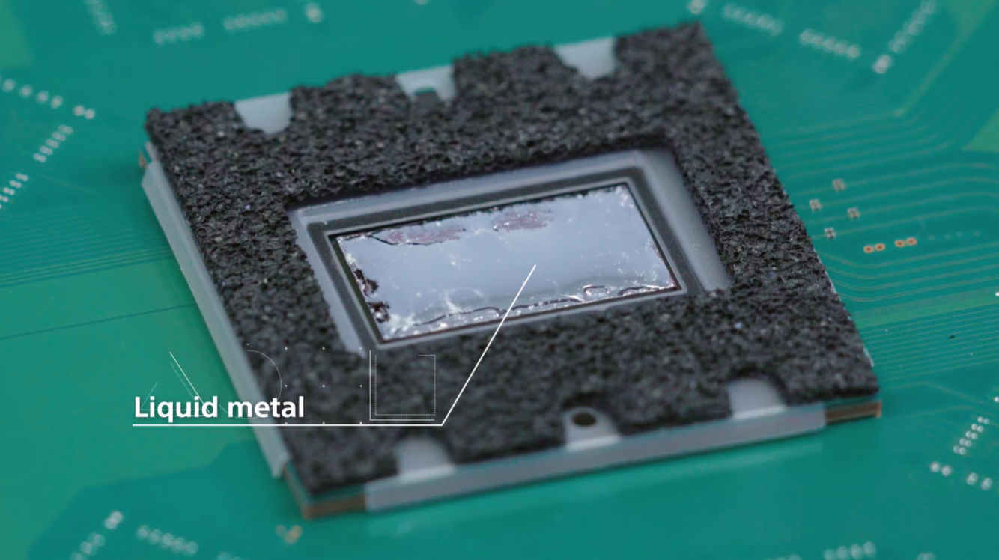

PlayStation®5
CPU
GPU
PlayStation®5
CPU
GPU
A competitive CPU of choice would be the AMD Ryzen 7 3700X, a chip capable of reaching a max speed of 4.4 GHz in all 8 of its Zen 2 cores. For the GPU, the closest that PC builders can come right now to mimic the PS5's GPU is to get the RDNA2 based AMD RX 6800XT, which has the double compute units(72), all running at a base frequency of 2015 MHz and capable of reaching to around 2250 MHz while being equipped with 16GB of GDDR6 memory.
 ¨Now supports up to 8k resolution